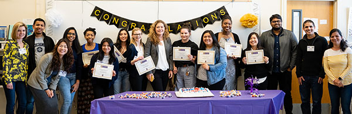

Become A PINC Student?
Want To Become A PINC Student?
If you are interested in the Fall 2020 PINC program, please click here to complete our interest form. PINC is a program intended for Biology and Chemistry majors (but all majors are welcomed) to learn about computer science. The program consists of a series of 5 Computer Science classes for non-CS majors (15 units total) taken over four semesters. If you complete all 5 classes successfully, you will earn a minor in Computing Applications. The courses include CSc 306 (Computing and App Design for Biologists), CSc 220 (Data Structures and Algorithms), CSc 307 (Web and Databases for Biologists), and CSc 690 (Two special topic courses, lectures, and independent research project). Students take classes with other biology and chemistry students and are mentored by CS grad students and Biology faculty. No prior computer science background needed. The first class of the PINC program (CSC 306) will be taught by Dr Pleuni Pennings, on MW 3:30 – 4:45 in Thornton 329. If you have trouble signing up for the class, please email pennings@sfsu.edu. The Big Data Summer Program is a summer program for students with and without coding and research experience. It runs June 3- Aug 3 for 10 hours per week. Join the PINC interest email list for more information about the Fall 2020 PINC Program and the Big Data Summer 2020 Program here!